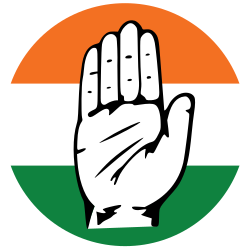

Indian National Congress
Indian National Congress/INC is a Indian political party that was founded in the year 1885 and had its breakthrough during the Indian movement for Independence.

With over 1.4 billion habitants India in know as one of the biggest democracy’s in the world. The democracy in India has been slightly adjusted to fit more into the Indian society. As of today India is home to over a hundred different languages and all of the major’s religions in the world. In India elections is hold one time every 5 years and has a total of eight political parties. They use the (FPTP) system which means that the political party with the most votes is declared the winner. India is primary split into two different parties INC and BJP, and the voters is often split evenly on these two parties.
Indian National Congress/INC is a Indian political party that was founded in the year 1885 and had its breakthrough during the Indian movement for Independence.